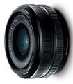

器材库 > APS画幅镜头 > XF18/2 R

详细规格
镜头类型
广角镜头
发布日期
2012-01-10
焦距
18mm
等效35mm画幅焦距
27mm
最大光圈
f/2.0
最小光圈
f/16
视角（对角）
76.5°
镜头结构
8片/7组
非球面镜片
2片
光圈叶片
7片
最近对焦距离
18cm
最大放大倍率
0.14
滤镜口径
52mm
镜头卡口
Fujifilm X
防抖
否
颜色
黑色
尺寸
64.5×40.6mm
重量
116g
zjize2014-12-25 12:054.5 分
操作性 4.00耐用性 4.50性价比 5.00解像力 4.50色彩还原 5.00机械结构 4.00
realm2014-06-05 01:144.5 分
操作性 5.00耐用性 4.50性价比 5.00解像力 4.00色彩还原 4.50机械结构 4.00
anson5342014-02-12 13:374.42 分
操作性 4.00耐用性 5.00性价比 5.00解像力 5.00色彩还原 5.00机械结构 2.50
okpaul2013-12-29 12:534.42 分
操作性 4.50耐用性 4.50性价比 4.00解像力 4.50色彩还原 4.50机械结构 4.50
产品图 / 样片
XF18/2 R